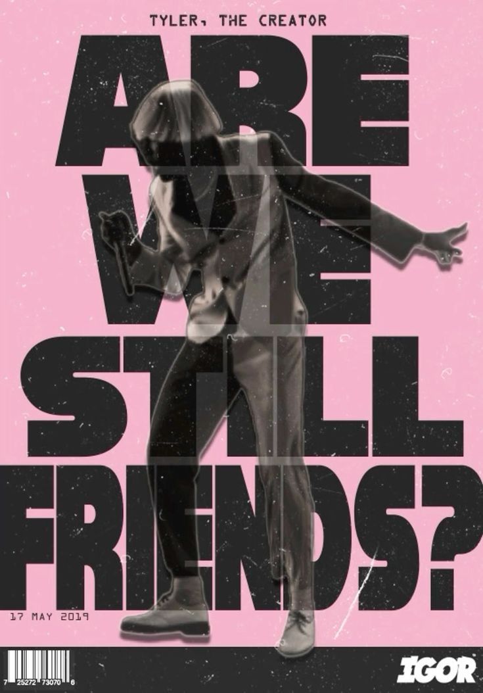

Faixas em destaque
EARFQUAKE
Um dos maiores sucessos do álbum, trazendo um tom melódico, romântico e melancólico.
Ouvir no Spotify
I THINK
Uma faixa dançante, inspirada no soul e no funk, explorando sentimentos de incerteza e desejo.
Ouvir no Spotify

ARE WE STILL FRIENDS?
O encerramento do álbum, com forte influência de soul e emoção, refletindo sobre término e reconexão.
Ouvir no Spotify